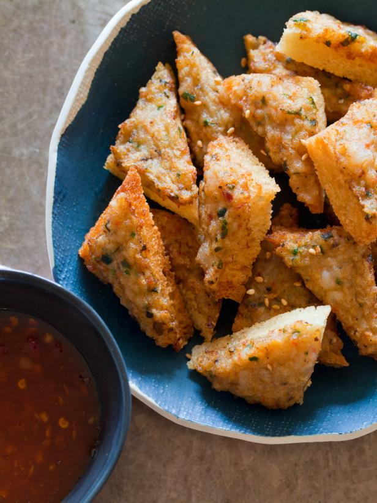

Shrmp Toast

Description:
The secret to this semi-traditional dim sum favorite is a butter-studded shrimp
mousse that comes together quickly in a food processor with just five ingredients.
Ingredients:
- 8oz peeled and devined raw large shrimp
- 1 large egg
- 1 tsp kosher salt
- 2 tbsp cold unsalted butter, cubed
- 3 1/2 tsp toasted sesame seeds, divided
- 6 white bread slices, crusts removed
- Canola oil, for frying
- 1/2 scallion, finely chopped
- 1 tbsp soy sauce
- 1 tbsp rice vinegar
- 1 1/2 tsp sambal oelek
- Thinly sliced scallion, for garnish
Directions:
-
Combine shrimp, egg and salt in a food processor; process until smooth,
about 15 seconds, stopping to scrape down sides as needed. Add butter
and 2 tsp sesame seeds; pulse until smooth with flecks of butter
remaining, about 7 times. Spread 1/4 cup shrimp mousse on each bread slice.
-
Pour oil into a large nonstick skillet to a depth of 1/8 inch; heat over
medium until shimmering, about 3 minutes and 30 seconds. Working in batches,
add bread slices, mousse side down; cook until lightly browned, about 2
minutes. Flip toasts; cook until browned and mousse is firm to the touch,
about 1 minute. Transfer to paper towels to drain.
-
Stir together chopped scallion, soy sauce, vinegar, sambal oelek, and
remaining 1 1/2 teaspoons sesame seeds in a small bowl. Cut each toast into
8 triangles; transfer to a platter or board. Serve soy sauce mixture with
toasts. Garnish toasts with sliced scallion, and serve.
Return to Main
Return to Top